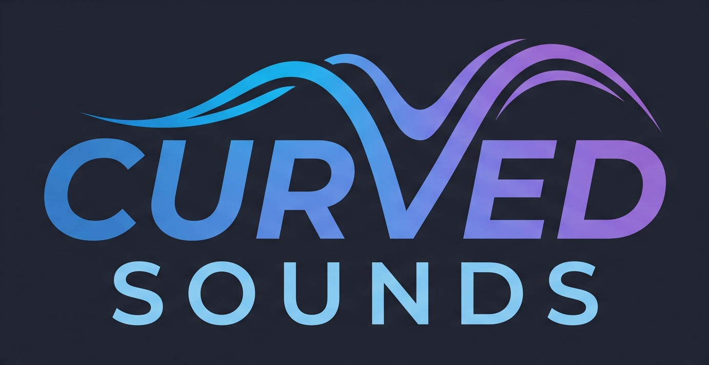

RootD
ModeDorian
Emotional PresetNordic Drift
Tempo58 BPM
Master48%
Evolution38%
Space / Silence72%
Harmony Hold32 bars
Human Drift24%
Story ModeOff
ConductorOn
Morph TargetAurora Motion
Scene Morph0%
Current harmony-
DNA PresetJay Curve DNA 01
Apply DNAstyle
Export DNAJSON
Copy Summarytext
Rain14%
Wind18%
Forest8%
Shimmer Dust18%
Ambient Forge is a MIDI-first ambient composition engine.
Ambient Forge generates MIDI which can be routed into any DAW.
Supported examples:
Ambient Forge is DAW-independent.
CH1 = Root Drone
Long evolving foundation.
CH2 = Chord Body
Main harmonic layer.
CH3 = Upper Extensions
Air and harmonic colour.
CH4 = Motion
Movement and evolution.
CH5 = Sparkles
Shimmer, bells and details.
CH6 = Soft Bass Pulse
Low-frequency support.
CH1: Drones, atmospheres, long pads.
CH2: Pads, strings, warm textures.
CH3: Choirs, high pads, harmonic layers.
CH4: Motion textures, soft pulses.
CH5: Bells, glass, shimmer sounds.
CH6: Sub bass, low drones.
Track 1 → MIDI Channel 1
Track 2 → MIDI Channel 2
Track 3 → MIDI Channel 3
Track 4 → MIDI Channel 4
Track 5 → MIDI Channel 5
Track 6 → MIDI Channel 6
Export 6-track MIDI creates:
The file can be imported into any DAW.
Ambient Forge
+
Vital
+
Valhalla Supermassive
+
Your preferred DAW
Ambient Forge starts with a drone and gradually builds a harmonic world around it.
The goal is not a traditional song structure.
The goal is:
Atmosphere
Movement
Space
Emotion
Ambient Forge by Curved Sounds
Ambient music should be accessible to everyone.
Ambient Forge is free because ambient music should be accessible to everyone.
If Ambient Forge helps you create music, learn music theory, teach students, relax, meditate, or discover new ideas, and you would like to support future development, you can use the Buy Me a Coffee link on the project page.
Suggested free ambient studio: Ambient Forge + Reaper + Vital + Valhalla Supermassive.